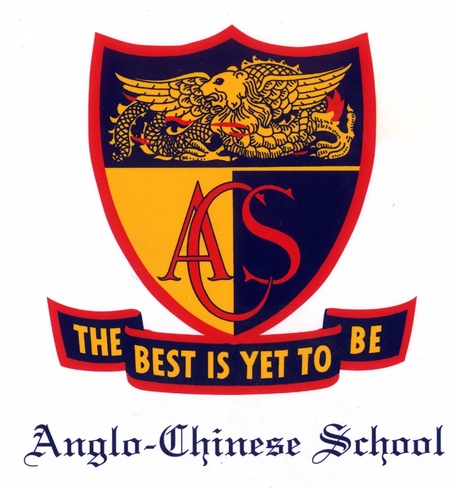

My education Journey

National University of Singapore
August 2018 - December 2021
Bachelor of Computing in Computer Science (Hons)
- Programming Methodology
- Data Structure & Algorithms
- Software Engineering
- Computer Networks
- Information & Computer Security
- Operating Systems
- Artificial Intelligence
- Software Engineering Principles & Pattern
- Software Testing
Notable Modules Taken:

Anglo-Chinese Junior College
January 2016 - December 2017
Singapore-Cambridge GCE Advanced Level (A-level)
- Devoted a few hours weekly to volunteer at Lakeside Family Centre
- Tutored underprivileged children to enable them to excel in their studies and be on par with their fellow peers
- Volunteered and rendered assistance at Society for the Aged Sick, Concern and Care Society and Stepping Up, Stepping Out project at Bethany Methodist Home to gain a more profound understanding of social issues and the ageing population in Singapore
- Polished event planning and project management skills by devising various projects for a diverse group of target audience
Interact Club (2016 - 2017)
Lead tutor
- Selected to represent the school and took on a BreadTalk project to develop entrepreneurial skills
- Gained insights into Chinese culture through networking with student leaders and immersion in Chinese Wushu
- Volunteered at Sunshine Home (China) to interact with the intellectually disabled
- Honed interpersonal and project management skills through organizing events